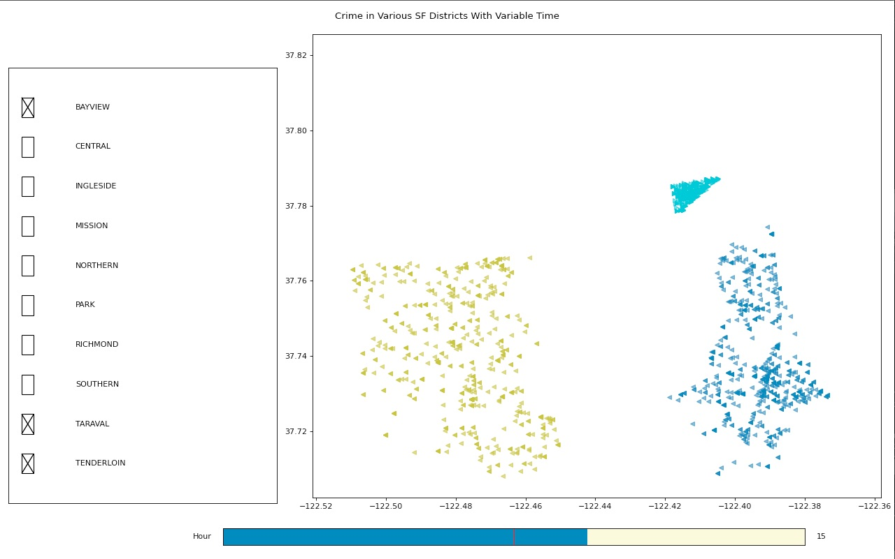

San Francisco Crime Map
For this project, I used the Python matplotlib and pandas libraries to process and visualize 2016 crime report data from San Francisco's 10 police districts. I decided to parse the data by time of day, and created an interface that allows the user to scroll through the day, responsively updating the plot.

Fig. 1: Total reports in every district at 15:00
Users are also able to individually show or hide specific districts. This allows for easier comparison between times and districts.
Fig. 2: Total reports in the districts of Taraval, the Tenderloin, and Bayview at 15:00

Fig. 3: Total reports in the districts of Taraval, the Tenderloin, and Bayview at 03:00